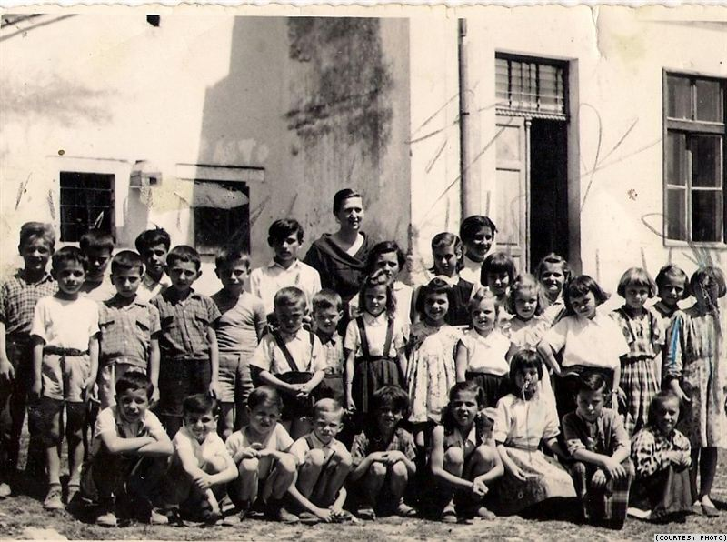
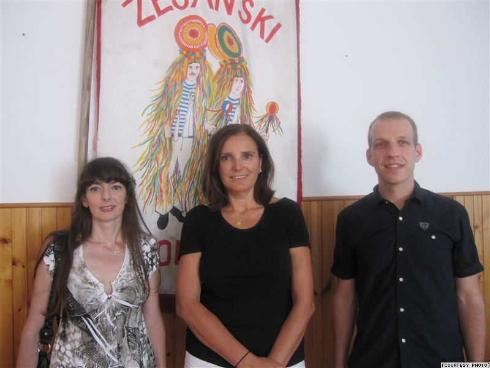
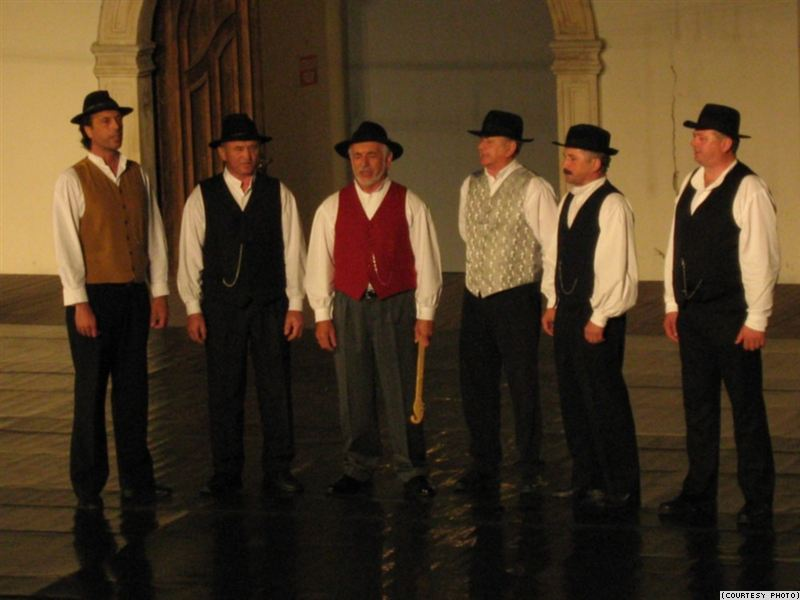

Croatians commonly assert that "Best wishes come from the heart." When they say it in most places, it sounds like this: "Najbolje želje od srca." But in a few sleepy villages tucked under Ucka Mountain on Croatia's Istrian Peninsula, the proverb sounds quite different: "Mai mușåte jele viru din irimă."
The area is the historical homeland of the few remaining individuals in the world who speak the language known as Vlashki.

Unlike Croatian, which is Slavic, Vlashki is Romance -- a descendant of the language spoken by the Vlachs, nomadic shepherds who migrated from the area around present-day Romania.
The Vlachs settled in Istria in the 16th century, and over the years their language borrowed heavily from Croatian but always remained distinct.
Known to linguists as "Istro-Romanian," it is both unintelligible and unknown to the vast majority of Croatia's population.
And today, with a mere 150 native speakers remaining in the traditional home villages of Vlashki, and a few hundred more in surrounding towns, the language is well on its way to extinction.
Its demise began after World War II, when a major wave of emigration diluted the community. The building of a tunnel in 1981 that connected villages to urban centers further removed the language's protective isolation.
Vlashki is succumbing to Croatian at an increasing pace, and speakers like Viviana Brkarić know it.
"Unfortunately, the language is dying. There are fewer and fewer speakers," Brkaric says. "A lot of people moved out [after] World War II, and some even earlier, but one of language's biggest problems is the fact that it hasn't been written down [much]."
To Cyberspace Via New York
But thousands of miles from Istria, one linguist has vowed not only to transcribe Vlashki, but to thoroughly document it, promote it, and hopefully trigger a revival of it.
 Croatia native Zvjezdana Vrzić grew up in a household with Vlashki roots. Her grandmother was a native Vlashki speaker from Zankovci, a hamlet near one of the six northeast Istrian towns that form the language's epicenter.
After becoming an adjunct professor at New York University, Vrzić again found herself in a Vlashki setting of sorts: New York City, and specifically, the borough of Queens, which is home to the largest community of Vlashki speakers outside Croatia.
The setting, along with her family history and profession, was enough motivation for Vrzić to initiate an ambitious project that's now in its fifth year.
"I want to create a digital archive -- a regional digital archive -- where all the materials available on the language, including those that I'm collecting myself, will be deposited," Vrzić says. "[I want to create] an archive that will become available to the community members. And I'm kind of bringing a different angle to it by making it very technologically-inspired."
Vrzić's website launched in June and is now the focal point for her project's many parts. It features audio and videos of Vlashki speakers, collected by Vrzić as well as Brkaric, who assists her, and other helpers.
There are also language lessons, a Vlashki-Croatian dictionary, digitized versions of the few printed Vlashki-language stories, maps, historical information, and photographs. In total, it's the start of an ethno-linguistic corpus.
Next on Vrzić's agenda is to complete linguistic analyses of her language samples. She also intends to add to the online dictionary, which is based on work done in the 1960s by another linguist, create a Croatian-to-Vlashki version, and eventually translate it into English.
Hope For Revitalization
While she hopes other linguists will discover her project and undertake their own studies of the language, Vrzić says her main audience is Vlashki speakers themselves -- including second- and third-generation speakers who may have partial or passive knowledge.
"As a linguist, I want to do everything that I can to document it as well as I can. But through this process of documentation, it does set a foundation for possible revitalization," Vrzić says. "But for revitalization to happen, it's not enough to have a linguist document a language. You need a community wanting to revitalize their language."
Back in Croatia, Vrzić's efforts seem to have tapped into existing local motivation.
 In June, her team organized a series of well-attended language workshops, as well as a children's play, in the town of Žejane, where a variant of Vlashki known as Žejanski is spoken.
Vrzić is now working with locals to plan a Vlashki heritage center, and her assistant, Brkarić, will offer Vlashki classes to local children if funding comes through.
Funding for the work so far has come largely from the Istrian regional government, with additional help from the Croatian Culture Ministry and local municipalities.
Some community members have also undertaken independent efforts to preserve the local language and culture. The Zejanski Singers, a group founded in 1997, performs the songs villagers traditionally sang on their way home from working in the fields.
Today, as in the past, not a word is in Croatian.
Mirjana Rakela
September 21, 2010
© 2010 Radio Free Europe | Radio Liberty